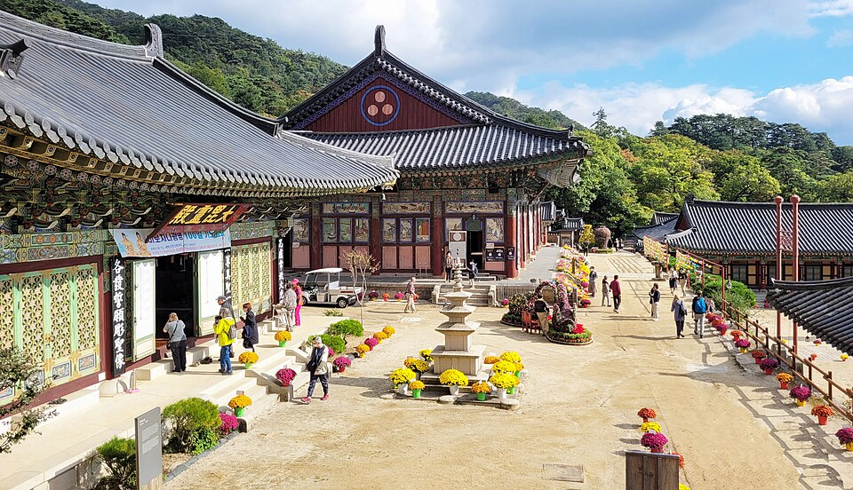

คย็องนัมในคลิปวิดีโอ: นังมยอนสไตล์จินจู ซากุระชินแฮ ตลาดซอโฮ และอีกมากมาย
ร้านอาหารและสถานที่ท่องเที่ยว 5 แห่งในคย็องนัมที่ปรากฏในวิดีโอ ได้แก่ บะหมี่เย็นสไตล์จินจู แก้มปลาค็อดตุ๋นที่ฮัมยาง ชุดอาหารซุปชีแรกีที่ตลาดซอโฮ เมืองทงยอง เทมเปิลสเตย์ที่วัดแฮอินซา และเทศกาลซากุระชินแฮ
คย็องนัม: ทะเล บะหมี่ และดอกซากุระ
คย็องนัม (คย็องซังนัมโด) ตั้งอยู่ทางตะวันออกเฉียงใต้ของเกาหลี ขึ้นชื่อเรื่องชายฝั่งทางใต้แถบทงยองและคอเจ บะหมี่เย็นสไตล์จินจู และดอกซากุระของชินแฮในฤดูใบไม้ผลิ อาหารที่คนท้องถิ่นชื่นชอบได้แก่ นังมยอนจินจู อาหารทะเลของทงยอง และชุงมูกิมบับ (ข้าวม้วนสาหร่ายชิ้นเล็กเสิร์ฟพร้อมเครื่องเคียงรสเผ็ด) รวมถึงอาหารทะเลจากคอเจ ต่อไปนี้คือสถานที่ที่ปรากฏในวิดีโอเกี่ยวกับภูมิภาคนี้
ร้านอาหาร
ร้านพักกุนจาจินจูนังมยอน
📍 ร้านพักกุนจาจินจูนังมยอน · Naver Map · Google Maps
ร้านที่เสิร์ฟบะหมี่เย็นสไตล์จินจู หนึ่งในอาหารขึ้นชื่อของภูมิภาค ร้านนี้ปรากฏในวิดีโอ "Lunch at Parkgunja Jinju Naengmyeon" เหมาะสำหรับใครที่อยากรู้ว่านังมยอนแบบจินจูต่างจากที่อื่นอย่างไร
ร้านทัลทงเนชิกทัง (ฮัมยาง)
ร้านอาหารในฮัมยางที่เชี่ยวชาญเรื่องแก้มปลาค็อดตุ๋น (แทกูปโปลจิม) เคยออกรายการเกาหลีของเชฟแพ็กจงวอน "Nima, Please Go to That Market" (ตอนที่ 30 ฮัมยาง) ซึ่งหน้าตาอันโดดเด่นของเมนูนี้ทำเอาแพ็กจงวอนเองยังประหลาดใจ
ร้านซุปชีแรกีในตลาดซอโฮ เมืองทงยอง
ร้านเล็ก ๆ ในตลาดซอโฮของทงยอง เสิร์ฟชุดอาหารซุปชีแรกี (ซุปใบหัวไชเท้าตากแห้ง พร้อมข้าวและเครื่องเคียง) ในราคา 6,000 วอน ร้านนี้เคยออกรายการท่องเที่ยวชิมอาหารของฮอยองมัน "Baekban Gihaeng" ซึ่งเน้นถึงความคุ้มค่าและเครื่องเคียงสไตล์ทงยอง เป็นมื้อเรียบง่ายแบบคนท้องถิ่นที่เข้ากันดีกับการเดินเล่นในตลาด
สถานที่ท่องเที่ยว
วัดแฮอินซา

📍 วัดแฮอินซา · Naver Map · Google Maps
วัดที่นักท่องเที่ยวสามารถเข้าร่วมเทมเปิลสเตย์เพื่อสัมผัสชีวิตแบบนักบวช วิดีโอ "Is Korea's Templestay Right for You? (Haeinsa Temple)" พาไปดูว่าประสบการณ์นี้เป็นอย่างไร และเหมาะกับใครบ้าง
เทศกาลซากุระชินแฮ (ชินแฮกุนฮังเจ)
📍 เทศกาลซากุระชินแฮ · Naver Map · Google Maps
เทศกาลฤดูใบไม้ผลิของชินแฮที่มีชื่อเสียงเรื่องดอกซากุระ มีวิดีโอสองเรื่องที่พูดถึงเทศกาลนี้ ได้แก่ "Jinhae Cherry Blossom Festival: Tips, Tricks & Food" และ "Jinhae Cherry Blossom Festival: A Feast for the Eyes and Taste Buds" พร้อมคำแนะนำที่ใช้ได้จริงและอาหารในเทศกาล
วางแผนเส้นทาง
สถานที่เหล่านี้กระจายอยู่ทั่วคย็องนัม จึงควรจัดกลุ่มตามพื้นที่แทนที่จะพยายามเที่ยวให้ครบในวันเดียว สำหรับเส้นทางชายฝั่ง ลองกินชุดซุปชีแรกีที่ตลาดซอโฮในทงยอง แล้วไปตระเวนชิมอาหารทะเลของทงยองและคอเจ หรือลองชุงมูกิมบับ สำหรับเส้นทางด้านใน ให้รวมร้านพักกุนจาจินจูนังมยอน ร้านทัลทงเนชิกทังในฮัมยาง และเทมเปิลสเตย์ที่วัดแฮอินซาเข้าด้วยกัน โดยเผื่อเวลาไว้ให้มากพอ ส่วนเทศกาลชินแฮจัดขึ้นเฉพาะช่วงซากุระบานในฤดูใบไม้ผลิเท่านั้น ถ้าอยากไป ควรกำหนดวันเดินทางตามเทศกาลนี้ก่อน
ร้านและสถานที่ในวิดีโอ
- ร้านพักกุนจาจินจูนังมยอน (박군자진주냉면) (박군자진주냉면) บะหมี่เย็นสไตล์จินจู Naver Map Google Maps
- วัดแฮอินซา (해인사) (해인사) เทมเปิลสเตย์ Naver Map Google Maps
- เทศกาลซากุระชินแฮ (진해 군항제) (진해 군항제) ดอกซากุระ (ฤดูใบไม้ผลิ) Naver Map Google Maps
- ร้านทัลทงเนชิกทัง ฮัมยาง (달동네식당) (달동네식당 (함양)) แก้มปลาค็อดตุ๋น Naver Map Google Maps
- ตลาดซอโฮ ทงยอง (통영 서호시장) (통영 서호시장) ชุดอาหารซุปชีแรกี (ใบหัวไชเท้าตากแห้ง) ที่ร้านในตลาด (6,000 วอน) Naver Map Google Maps
ที่ตั้งและเวลาเปิดอาจเปลี่ยนแปลง โปรดตรวจสอบแผนที่ก่อนไป
วิดีโอที่เกี่ยวข้อง


บทความอื่น
- คู่มืออาหารจังหวัดชอลลานัมโด: ปูหินยออซู ซีฟู้ดมกโพและกับข้าวหลายอย่าง กวางจูและอาหารจากรายการอาหารเกาหลี
- คู่มือของกินตลาดในโซล: ควรกินอะไรที่ตลาดควังจังและตลาดปลาโนรยังจิน (สรุปจากคลิปฟู้ดทัวร์)
- คู่มือ K-Beauty ในโซล: ช้อปปิ้ง Olive Young มยองดงและซองซู คลินิกผิวและทรีตเมนต์ความงาม
- คู่มืออาหารเกาหลีตามภูมิภาค: อะไรควรกินที่โซล ปูซาน เชจู มกโป แทกู จอนจู และเมืองอื่น ๆ (รวบรวมจากวิดีโอมูคบังและอาหารยอดนิยมบนยูทูบ)
- คู่มือกินในเมืองจอนจู: บิบิมบับ อาหารข้างทางหมู่บ้านฮันอก ตลาดกลางคืนนัมบู และเต็กกัลบีกุนซาน (จากวิดีโอท่องเที่ยว)
- คู่มือกินอาหารในเกาะเชจู: หมูดำ อาหารทะเล ตลาดกลางคืนดงมุน และสถานที่ท่องเที่ยวระหว่างทาง